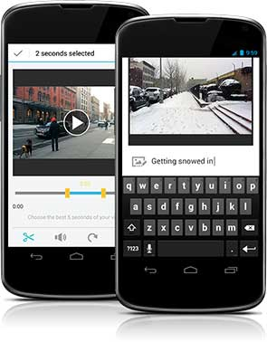

At the end of 2014, we formed a small startup-like team to explore, test, and build BuzzFeed's first standalone mobile news app. The team was BuzzFeed's first experiment modeling a structure after Spotify's squad-based model. The goal was to design a news app that would serve as a trusted voice to distill what’s worth knowing about events in the world, analogous to a news-oriented friend texting you selective and personalized messages about events and stories.
Ultimately, after many explorations and learnings from early testing, the app’s design involved a finite digest of an average twenty stories at a time throughout the day, handpicked by our news editorial team. It also comprised of modular pieces of rich content types to design, from image galleries to timelines to pull quotes to native-like social media embeds.
Our news editorial would also add color to stories with their own voice and take, through the red text in the locking headings seen in the “Catch Up” tab, as well as through their own leading descriptions right above any modular content piece. The other spot they did this was through carefully written push notifications, which would source from an “Alerts” tab displaying a stream of all the notifications being written, with indications inline of what you’ve subscribed to. From here, you’d be able to both discover and manage what you opted in and out of.
This product launched in the App Store on June 2015. BuzzFeed News 1.0: App Store.
Apple Watch
This was a project directly following the launch of BuzzFeed News for iOS. The target was to design and ship an Apple Watch app around the public release of watchOS 2 a couple months later in the fall. The timing would also allow us to support new OS features like native third-party apps and watch face complications. The watch app shipped on September 2015, a few days after watchOS 2 landed.
The goal was to design a watch app that would consider how readers would interact with news on the watch platform, while complementing the services provided by the iOS news app.
After a variety of explorations, the watch app evolved into a focused experience for discovering and managing the “alerts stream” from the iOS app (home to push notification content within the app), which would allow readers to quickly triage news alerts as they come in.
After wrapping up work on the BuzzFeed News watchOS app, I joined BuzzFeed's Experimental Apps team around August 2015 to work on the design and launch of a mobile quiz app, which became the QuizChat app.
The goal was to design an app allowing players to take multiplayer quizzes by relaying over messaging apps like (primarily) Facebook Messenger, to take advantage of the Messenger app platform announced at Facebook's F8 conference months earlier.
One of the challenges was exploring ways to communicate the game mechanics of this app, since the behavior of an app this integrated with Messenger's platform was new territory that many players might not immediately comprehend.
Beyond that, this involved exploring techniques of game mechanics, motion, and the interactions of social gaming.
Throughout the second half of 2014, I was focusing on various features within the BuzzFeed iOS app, focusing on user navigation of BuzzFeed's rich content hierarchy, entry points for push notifications, and content discovery.
One of the early projects involved designing an experience for browsing the top and trending 20 posts of the moment in a digestible and gleanable way. Because the list was finite and updated periodically, it was also an opportunity to punctuate the list with a success summary at the end of the scroll, followed by a prompt to opt into alerts about any other trending posts through push notifications, thereby tying into our ongoing efforts to explore an expanded push notifications experience in BuzzFeed mobile apps. The learnings from both of these launches eventually carried over into later work on the BuzzFeed News app.
In one of the later projects, the initial higher level goals were to design a destination to read about any given writer at BuzzFeed in various departments from news to entertainment, and be able to discover, read, and share from their body of work. We also aimed to raise the presence and credibility of these authors, and provide a sense of their background and beat, as well as links to their social presence elsewhere. This culminated into a new feature called author profiles, pictured in the motion demo above.
These and other features shipped in the BuzzFeed iOS app throughout 2014 in the Apple App Store.
After working on Animoto's web application in the earlier part of 2012, I focused on an overhaul of our native apps for iOS and Android, which until then had been ported almost directly over from web. What worked fairly well on web hadn't been producing the same desired results in our mobile apps – and we explored, identified, and tested ways the app could be redesigned to help drive the user behavior we intended, so that our users could create high quality, mobile-friendly videos.
This involved staging out a redesign that drove certain key metrics. It ultimately displayed video styles in a more visual and immersive manner, to encourage usage of other styles beyond the default. It would also present the most relevant music for a given style. It would alter the photo picking habits when users chose what to add to their video projects. And it would drive more users through the registration wall at the end of the flow.
Following that, my next undertakings included a design of the counterparts to the video authoring experience – video consumption, sharing, and community features. Along the way, there were platform features I'd figure into these product rollouts, like the redesigns in iOS 7, universal app support and a whole new iPad experience, the evolution of the Facebook SDK, and integrations with emerging photo services.
All of these features for iPhone and eventually iPad were rolled out from iOS 5 through iOS 7 via updates in the Apple App Store.
Android

Throughout my time designing our iPhone and iPad apps, I'd find time to support our Android app as much as I could, helping engineering maintain feature parity wherever it made sense. However, with the amount of work on the iOS side, we could no longer sustain parallel design and development on both platforms, especially given that we were eventually understaffed on Android engineering, too.
Among the last major projects I did for our Android app were the completion of our app's migration to the Android 4.0 OS redesign, and a collaboration with our summer engineering intern on a video trimming tool in the authoring flow.
When I joined Animoto, my first project was to help establish our first web style guide. With that foundation in place, the focus became the web application for video authoring, and a redesign of the video player pages and homepage to tailor the product towards our goal of reaching a new consumer audience beyond the existing small business customers.
I prototyped interactive user interfaces for a redesigned event creation flow, and helped conduct user research and testing locally and remotely.
Also worked as a web developer on web apps like organizer profiles, attendee check-ins, and dashboard; site pages like the homepage, help desk, and contact form; and marketing collateral like microsites, landing pages, and email templates.
I worked with fellow developers and user experience design (Y! UED) to build and maintain a client-side web application for an enterprise-level advertising platform.